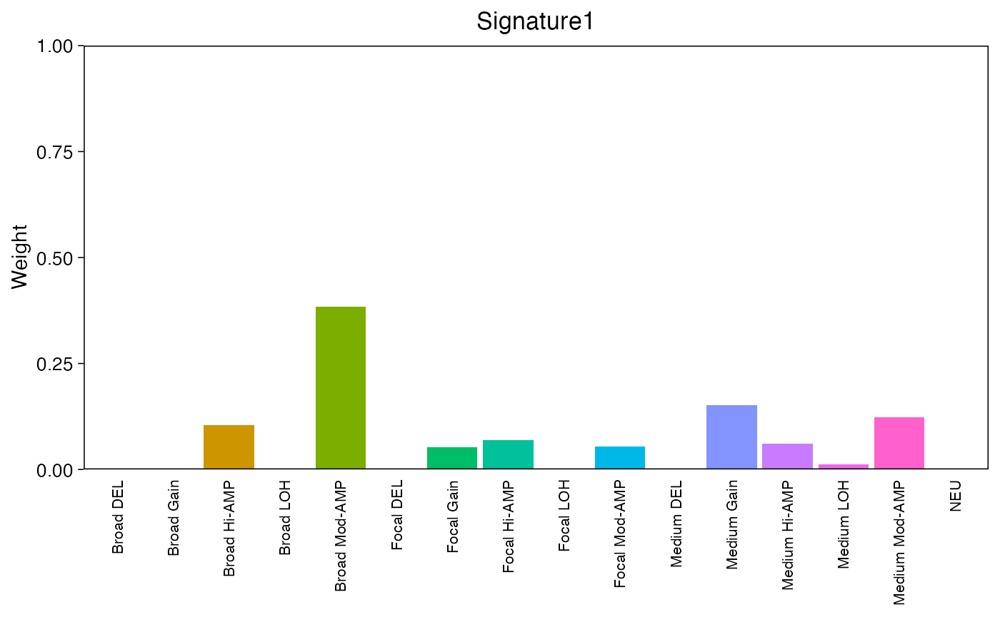
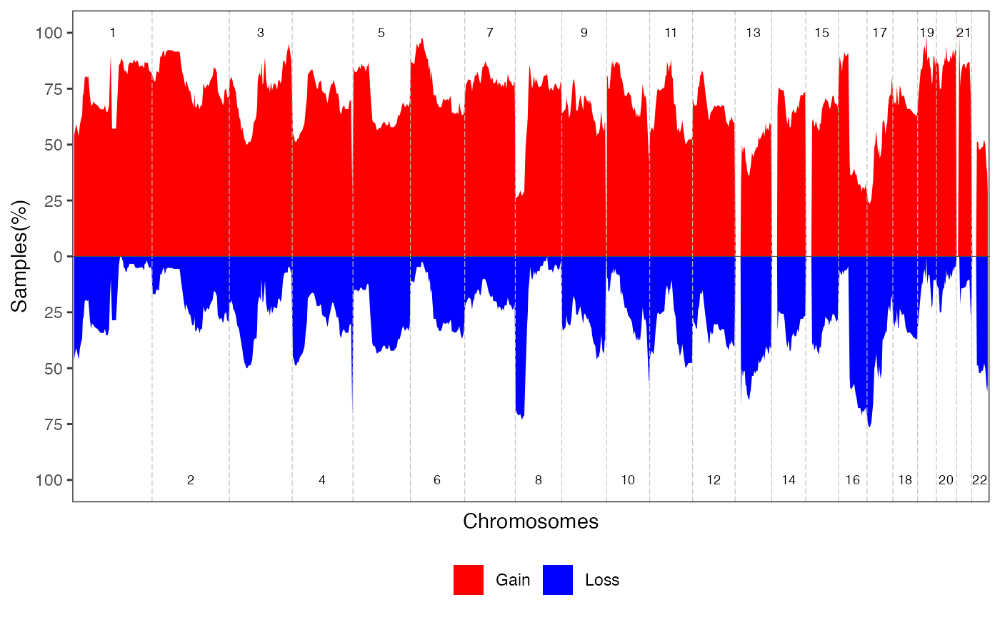
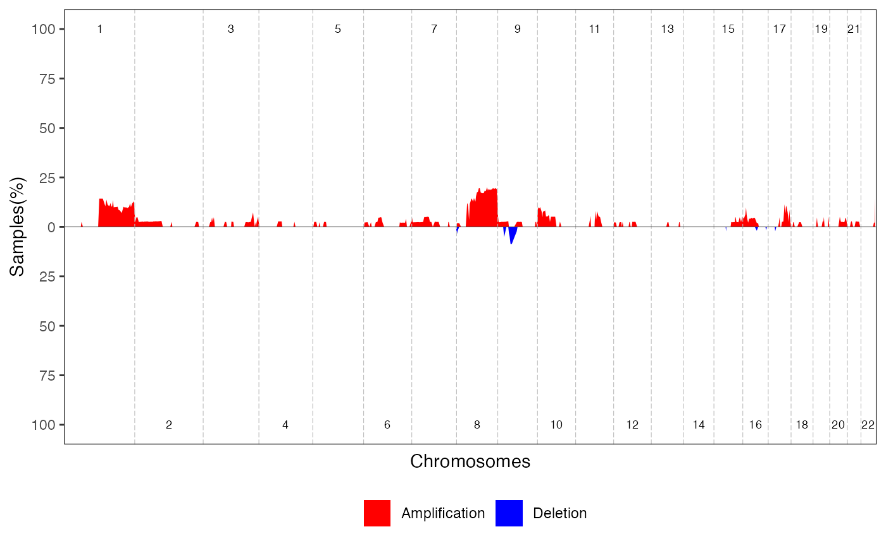
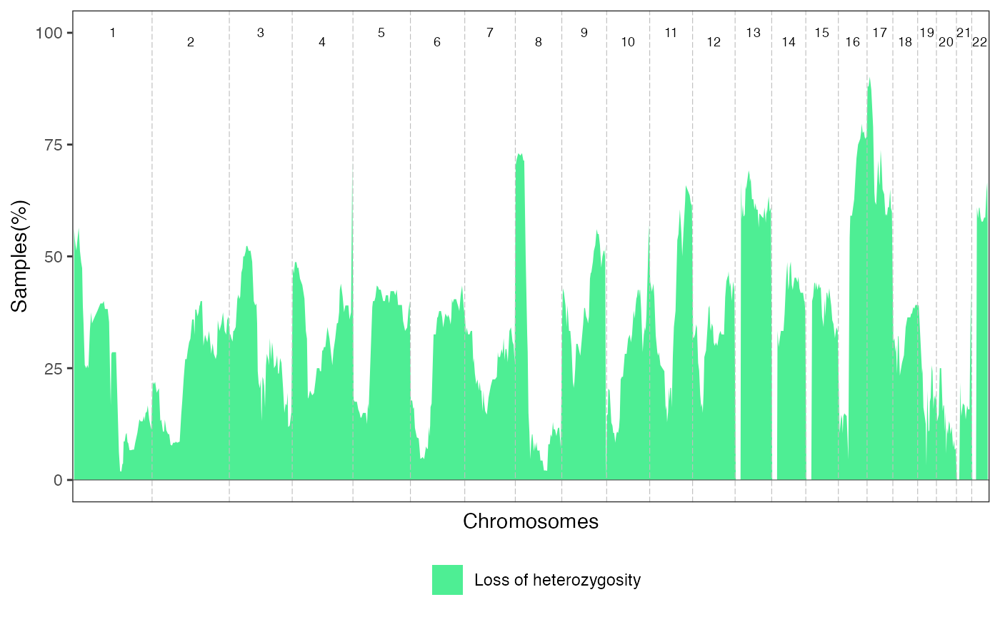

How-to-use.Rmd
devtools::install_github("nimahemmat/CNASigDetect")After installation, run the library
library(CNASigDetect)In order to test the functions, a table of segments from TCGA-BRCA
dataset is available as TCGA_BRCA_Segments.
head(TCGA_BRCA_Segments)
#> SampleID Chromosome Start End Major_Copy_Number
#> 1 TCGA-D8-A27H-01A chr1 13116 732994 3
#> 2 TCGA-D8-A27H-01A chr1 734210 1942014 2
#> 3 TCGA-D8-A27H-01A chr1 1943142 1987886 2
#> 4 TCGA-D8-A27H-01A chr1 1989523 6821628 2
#> 5 TCGA-D8-A27H-01A chr1 6822926 6862432 1
#> 6 TCGA-D8-A27H-01A chr1 6863666 6874235 2
#> Minor_Copy_Number
#> 1 0
#> 2 2
#> 3 1
#> 4 2
#> 5 1
#> 6 0For an optimal execution of package, it is recommended to prepare input file as below:
input_segments <- MakeSegInput(Segments = TCGA_BRCA_Segments,
SampleID_col = "SampleID",
Chr_col = "Chromosome",
Start_col = "Start",
End_col = "End",
MajorCN_col = "Major_Copy_Number",
MinorCN_col = "Minor_Copy_Number")
head(input_segments)
#> SampleID Chr Start End MajorCN MinorCN CopyNumber len_bp
#> 1 TCGA-D8-A27H-01A chr1 13116 732994 3 0 3 719878
#> 2 TCGA-D8-A27H-01A chr1 734210 1942014 2 2 4 1207804
#> 3 TCGA-D8-A27H-01A chr1 1943142 1987886 2 1 3 44744
#> 4 TCGA-D8-A27H-01A chr1 1989523 6821628 2 2 4 4832105
#> 5 TCGA-D8-A27H-01A chr1 6822926 6862432 1 1 2 39506
#> 6 TCGA-D8-A27H-01A chr1 6863666 6874235 2 0 2 10569
#> len_mb
#> 1 0.719878
#> 2 1.207804
#> 3 0.044744
#> 4 4.832105
#> 5 0.039506
#> 6 0.010569In this function, you can easily create an input file based on your data frame of allele-specific segments.
Segments is the name of your segment variable which
should be a data frame.
Within your data frame, SampleID_col is the name of
corresponding column for the sample IDs, Chr_col is that
for chromosome name column, Start_col and
End_col are the start and end column of segments,
MajorCN_col and MinorCN_col are the name of
columns for major and minor copy numbers.
ExtractCnaSignature() function is used to classify
segments based on their copy numbers and length, and generate a list of
results contains the features for each constructed CNA signature and
contribution of each signature across the cohort.
To run this function, follow:
# Should load NMF before this function
library(NMF)
#> Warning: package 'NMF' was built under R version 4.3.3
#> Loading required package: registry
#> Warning: package 'registry' was built under R version 4.3.3
#> Loading required package: rngtools
#> Warning: package 'rngtools' was built under R version 4.3.3
#> Loading required package: cluster
#> NMF - BioConductor layer [OK] | Shared memory capabilities [NO: bigmemory] | Cores 2/2
#> To enable shared memory capabilities, try: install.extras('
#> NMF
#> ')
result_signatures <- ExtractCnaSignature(Input.Segments = input_segments,
Focal_th = 3,
Broad_th = 10,
Art.len = 0.05,
k_range = 2:10,
n_run = 100)
#> Compute NMF rank= 2 ... + measures ... OK
#> Compute NMF rank= 3 ... + measures ... OK
#> Compute NMF rank= 4 ... + measures ... OK
#> Compute NMF rank= 5 ... + measures ... OK
#> Compute NMF rank= 6 ... + measures ... OK
#> Compute NMF rank= 7 ... + measures ... OK
#> Compute NMF rank= 8 ... + measures ... OK
#> Compute NMF rank= 9 ... + measures ... OK
#> Compute NMF rank= 10 ... + measures ... OK
#> [1] "Estimating the best rank ..."The arguments needed for this function are
Input.Segments which is the data frame created by
MakeSegInput(), Focal_th which is the
threshold of length in Mb for focal alterations, Broad_th
which is the threshold of length in Mb for broad alterations, and
Art.len which is the threshold for artifact segments which
are mainly due to hypersegmentation. Segments which are between focal
and broad thresholds are called medium segments. Other arguments are
k_range and n_run which are for NMF test.
# Features of constructed signatures.
signatures_features <- result_signatures[["Signature_Annotation"]]
head(signatures_features)
#> Signature Broad Hi-AMP Medium Hi-AMP Focal Hi-AMP Broad Mod-AMP
#> Signature1 Signature1 1.044879e-01 6.017817e-02 6.869141e-02 3.846139e-01
#> Signature2 Signature2 1.171759e-17 2.343519e-17 9.345572e-05 2.343519e-17
#> Signature3 Signature3 2.330925e-17 4.661849e-17 4.661849e-17 4.661849e-17
#> Signature4 Signature4 2.957284e-17 2.155282e-04 5.512496e-05 5.914567e-17
#> Signature5 Signature5 1.440680e-17 2.881361e-17 1.286929e-03 2.881361e-17
#> Signature6 Signature6 3.992851e-17 7.985702e-17 1.348897e-02 2.663088e-03
#> Medium Mod-AMP Focal Mod-AMP Broad Gain Medium Gain Focal Gain
#> Signature1 1.233033e-01 5.472604e-02 2.270972e-16 1.517705e-01 0.052228761
#> Signature2 2.343519e-17 2.916548e-04 2.343519e-17 2.343519e-17 0.001454432
#> Signature3 4.661849e-17 4.661849e-17 4.322520e-02 1.419514e-03 0.001487626
#> Signature4 7.961552e-03 6.666367e-03 8.485945e-01 8.532664e-02 0.025460235
#> Signature5 2.881361e-17 3.540745e-04 9.004653e-01 2.041908e-02 0.012488047
#> Signature6 6.758691e-03 1.880739e-02 1.197120e-04 4.223173e-01 0.214206343
#> Broad DEL Medium DEL Focal DEL Broad LOH Medium LOH
#> Signature1 1.055295e-16 1.055295e-16 1.055295e-16 3.165885e-16 1.270832e-02
#> Signature2 1.171759e-17 1.171759e-17 1.073524e-04 3.515278e-17 9.441030e-14
#> Signature3 2.330925e-17 1.055508e-04 6.541292e-04 8.771279e-01 5.895267e-02
#> Signature4 2.957284e-17 2.957284e-17 2.957284e-17 3.761099e-01 5.159473e-02
#> Signature5 1.440680e-17 1.440680e-17 1.440680e-17 6.471974e-02 5.762722e-17
#> Signature6 3.788774e-03 5.014366e-03 8.125476e-03 2.687554e-03 2.570122e-01
#> Focal LOH NEU
#> Signature1 0.0026104574 1.055295e-16
#> Signature2 0.0034998264 9.945533e-01
#> Signature3 0.0199345807 2.330925e-17
#> Signature4 0.0191111194 2.957284e-17
#> Signature5 0.0002668796 1.440680e-17
#> Signature6 0.1102892751 3.992851e-17
# Contribution of each signature across the cohort
signatures_contribution <- result_signatures[["Sample_Weights"]]
head(signatures_contribution)
#> Signature1 Signature2 Signature3 Signature4
#> 1105266 2.842008e-02 0.000406409 3.666116e-01 4.657297e-01
#> HCM-CSHL-0153-C50-01B 4.672040e-16 0.907483484 3.202799e-02 1.667199e-15
#> HCM-CSHL-0250-C50-01A 4.672040e-16 0.696625966 1.778519e-01 1.667199e-15
#> HCM-CSHL-0261-C50-01A 4.672040e-16 0.832339890 1.450671e-01 1.667199e-15
#> HCM-CSHL-0366-C50-01A 4.672040e-16 0.970521857 2.115204e-15 1.667199e-15
#> HCM-CSHL-0460-C50-01B 4.672040e-16 0.876581167 5.352163e-02 1.667199e-15
#> Signature5 Signature6
#> 1105266 0.07124511 6.757668e-02
#> HCM-CSHL-0153-C50-01B 0.04626705 1.422173e-02
#> HCM-CSHL-0250-C50-01A 0.12552282 1.234802e-15
#> HCM-CSHL-0261-C50-01A 0.01785011 4.743007e-03
#> HCM-CSHL-0366-C50-01A 0.02527071 4.207588e-03
#> HCM-CSHL-0460-C50-01B 0.03627716 3.362022e-02To visualise signatures’ features, you can pass
ExtractCnaSignature() results into
PlotSignatures() as below:
signatures_plots <- PlotSignatures(Sig.Results = result_signatures)Result is a list of bar plots for each signature:
signatures_plots[[1]]
CytobandLevelAlteration() function could accurately
detect cytoband level alteration using input file generated by
MakeSegInput(). This function calculates the affected
length of each cytoband and estimates the length-weighted alterations
per cytoband in each sample. Currently, this function support both hg38
and hg19 reference genome.
cytoband_level <- CytobandLevelAlteration(Input.Segments = input_segments,
Genome = "hg19",
Art.len = 0.05)
head(cytoband_level)
#> # A tibble: 6 × 15
#> SampleID band_chr band_start band_end band band_span_mb covered_mb
#> <chr> <chr> <int> <int> <chr> <dbl> <dbl>
#> 1 1105266 chr1 2300000 5400000 1p36.32 3.1 3.10
#> 2 1105266 chr1 5400000 7200000 1p36.31 1.8 1.80
#> 3 1105266 chr1 7200000 9200000 1p36.23 2 2.00
#> 4 1105266 chr1 9200000 12700000 1p36.22 3.5 3.50
#> 5 1105266 chr1 12700000 16200000 1p36.21 3.5 3.50
#> 6 1105266 chr1 16200000 20400000 1p36.13 4.2 4.19
#> # ℹ 8 more variables: frac_band_covered <dbl>, tcn_lenw <dbl>, lcn_lenw <dbl>,
#> # frac_del_lenw <dbl>, frac_loh_lenw <dbl>, frac_gain_lenw <dbl>,
#> # frac_amp_mod_lenw <dbl>, frac_amp_hi_lenw <dbl>The arguments of function are Input.Segments which is
the data frame generated by MakeSegInput(),
Genome which can be either hg19 or
hg38, and Art.len which is the threshold for
artifact segments.
The output file has the below column:
| Column | Description |
|---|---|
| SampleID | Unique identifier of each sample |
| band_chr | Chromosome name |
| band_start | Start point of cytoband |
| band_end | End point of cytoband |
| band | Name of cytoband |
| band_span_mb | Length of cytoband in Mb |
| covered_mb | Length of cytoband covered by corresponding segment in Mb |
| frac_band_covered | Length of cytoband covered by corresponding segment in Mb |
| tcn_lenw | Length-weighted total copy number of cytoband |
| lcn_lenw | Length-weighted minor copy number of cytoband |
| frac_del_lenw | Length-weighted fraction of cytoband which is deleted |
| frac_loh_lenw | Length-weighted fraction of cytoband which harboures LOH |
| frac_gain_lenw | Length-weighted fraction of cytoband which has 2 < copy number < 7 |
| frac_amp_mod_lenw | Length-weighted fraction of cytoband which has 6 < copy number < 10 |
| frac_amp_hi_lenw | Length-weighted fraction of cytoband which has copy number more than or equal to 10 |
In order to visualise genome wide alterations for Gain/Loss,
Amplification/Deletion, and rate of LOH across the cohort
PlotGenomeWideAlteration() can be utilised using cytoband
level data frame created by CytobandLevelAlteration().
genome_wide_plots <- PlotGenomeWideAlteration(Cytoband.level.data = cytoband_level,
Genome = "hg19",
Coverage = 0.8)This function generates a list of Gain/Loss, Amp/Del, LOH rate plots, and a data frame which contains the frequnecy of alterations per cytoband.
genome_wide_plots[["GainLoss_plot"]]
#> Warning: Removed 1 rows containing missing values (`geom_vline()`).
genome_wide_plots[["AmpDel_plot"]]
#> Warning: Removed 1 rows containing missing values (`geom_vline()`).
genome_wide_plots[["LOH_plot"]]
#> Warning: Removed 1 rows containing missing values (`geom_vline()`).
head(genome_wide_plots[["Cytobands_frq"]])
#> # A tibble: 6 × 15
#> chr start end band Amp_pct Del_pct Gain_pct Loss_pct LOH_pct band_len
#> <ord> <dbl> <dbl> <chr> <dbl> <dbl> <dbl> <dbl> <dbl> <dbl>
#> 1 1 2300000 5.40e6 1p36… 0 0 53.7 46.3 56.1 3100000
#> 2 1 5400000 7.20e6 1p36… 0 0 56.1 43.9 53.7 1800000
#> 3 1 7200000 9.2 e6 1p36… 0 0 57.5 42.5 52.5 2000000
#> 4 1 9200000 1.27e7 1p36… 0 0 59.0 41.0 51.3 3500000
#> 5 1 12700000 1.62e7 1p36… 0 0 56.4 43.6 53.8 3500000
#> 6 1 16200000 2.04e7 1p36… 0 0 53.8 46.2 56.4 4200000
#> # ℹ 5 more variables: cum_start_chr <dbl>, mid_local <dbl>, chr_len <dbl>,
#> # chr_offset <dbl>, mid_cum <dbl>